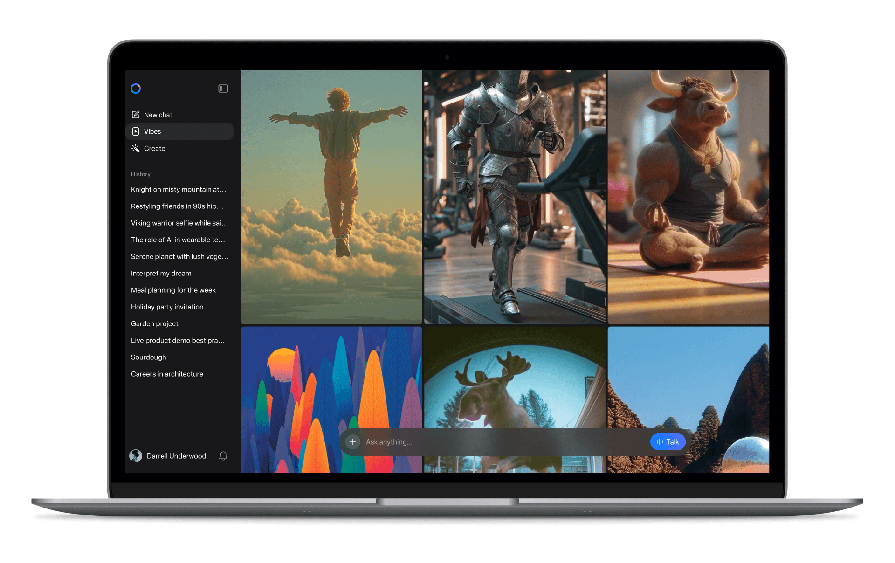
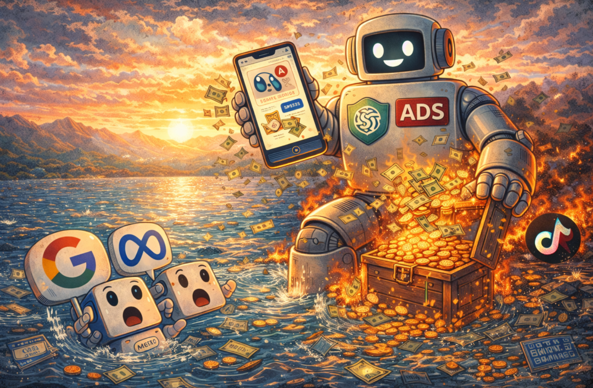
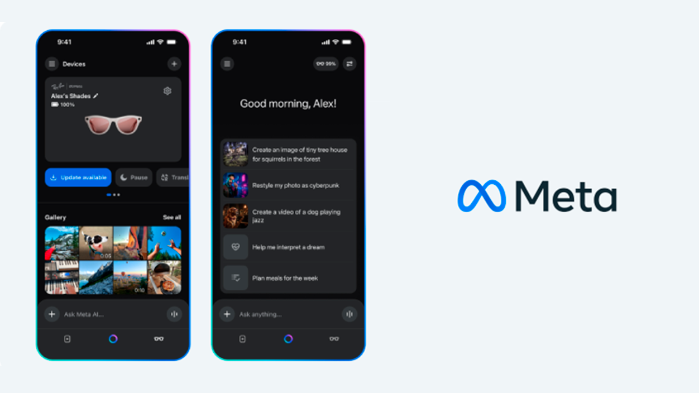
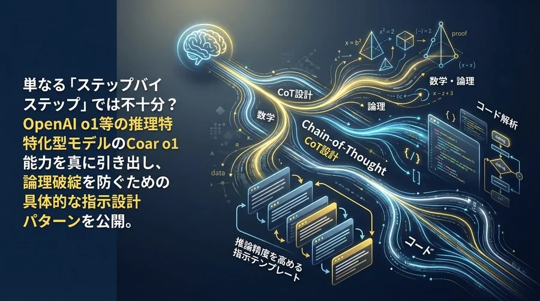
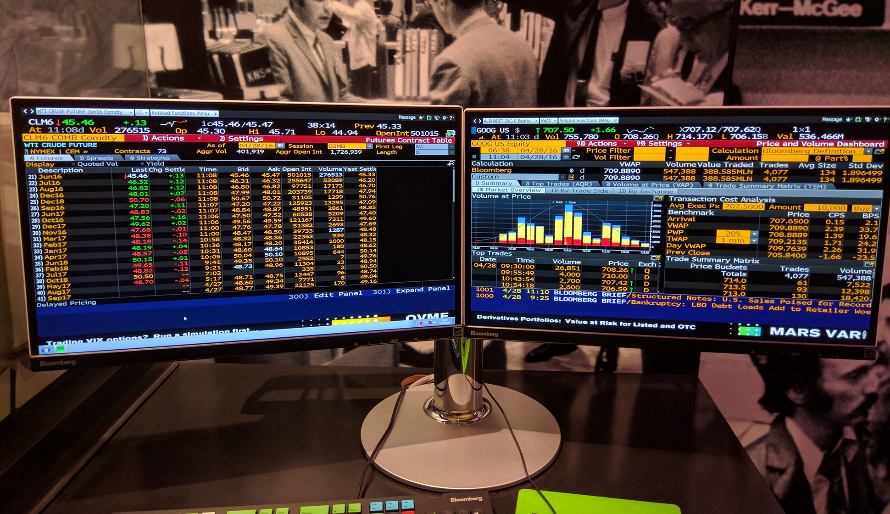
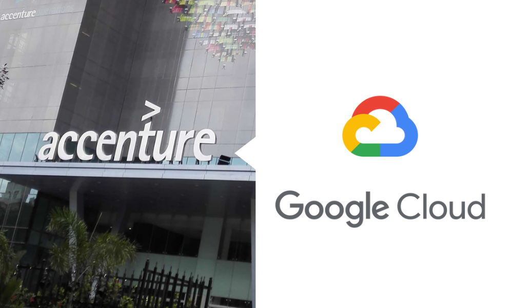
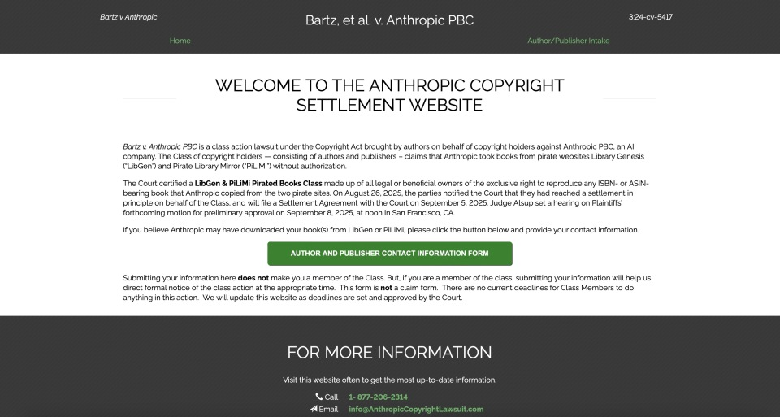
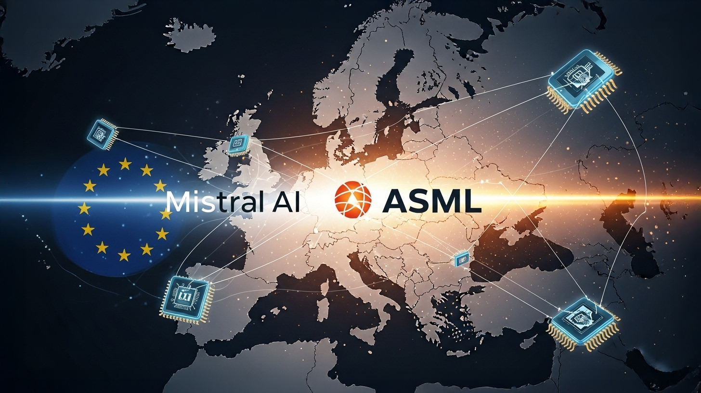
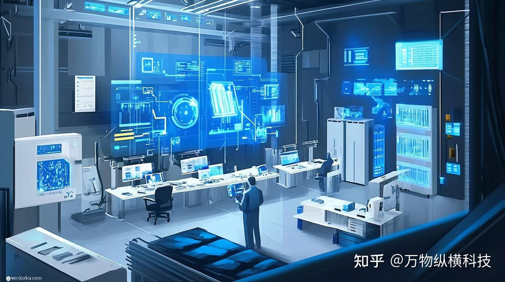
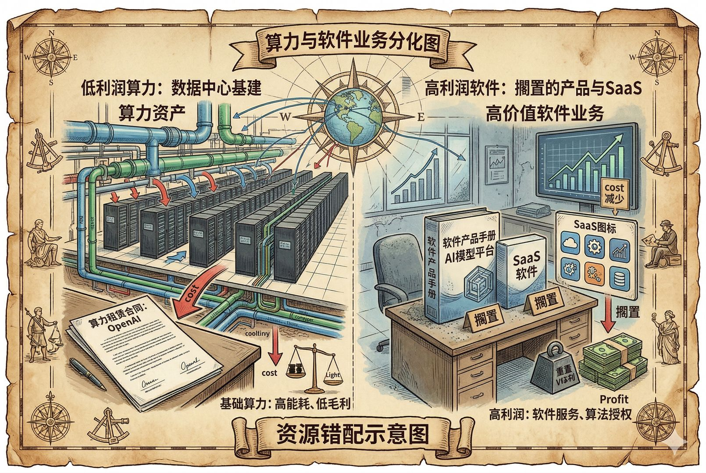

OpenAI
OpenAI
OpenAI拿流体老题交证明
来源: OpenAI · 2026-09-09 · 原文链接
OpenAI 9 月 8 日公布一项数学研究进展，称其模型帮助解决了二维不可压 Navier-Stokes 方程相关的一个长期问题，并把重点放在可验证推导、定理证明和人类数学家的复核流程上。文章没有把它包装成通用科学自动化胜利，而是强调模型在提出方向、整理证明和排查漏洞中的角色。
Janet 锐评：
数学不吃营销话术，证明要能被人逐行检查，不能靠一张排行榜糊过去。OpenAI 现在最需要的是这种能被外部专业社区慢慢啃的材料。坏消息也在这里：能证明一道题，不等于能替掉整个研究系统。

Meta
Meta用Vibes抢走视频流入口
来源: Meta · 2026-09-09 · 原文链接
Meta 9 月 8 日宣布在 Meta AI 中推出 Vibes，一个面向 AI 生成短视频的 feed。用户可以创建、混剪、分享 AI 视频，系统会根据互动逐步推荐内容。Meta 把它放在消费级入口里，而不是只当成模型 demo，目标很明显：让生成式视频从工具页面进入日常刷流。
Janet 锐评：
Meta 的狠处在分发直觉：视频必须进 feed 才能变成时间黑洞。创作者当然可以拿它试素材、找镜头感，但平台真正想拿走的是分发权：谁训练审美，谁决定模板，谁吃完注意力。AI 视频如果只剩无限刷，创作门槛降了，内容辨识度也会被平台均质化吞掉。
Bloomberg
Anthropic芯片通道收紧冲击训练
来源: Bloomberg · 2026-09-09 · 原文链接
多家媒体 9 月 8 日报道，Anthropic 面临新的芯片与云资源限制压力，涉及先进 AI 芯片出口、云租赁和不同司法辖区的算力访问边界。对前沿模型公司来说，这类限制不只是合规部门的麻烦，它会直接改变训练计划、推理成本和海外客户交付节奏。
Janet 锐评：
模型公司以前拼谁先拿到 GPU，现在拼谁能持续、合法、便宜地拿到 GPU。代价会一路传到 API 价格、调用限额和企业合同。中国团队看这种新闻别只看制裁两个字，更要看算力采购是否单点依赖；今天能跑，明天未必还能按同样成本跑。

The Information
ChatGPT广告计划进入商业排期
来源: The Information · 2026-09-09 · 原文链接
The Information 9 月 8 日报道，OpenAI 正在为 ChatGPT 探索广告业务，相关讨论包括搜索、购物和推荐场景。OpenAI 仍有订阅和 API 收入，但数亿用户带来的推理成本很难只靠会员覆盖，广告也意味着助手回答、推荐和商业利益之间的边界会更敏感。
Janet 锐评：
免费助手最怕突然收费，更怕慢慢变成导购。广告如果进入 ChatGPT，问题不只是屏幕上多一条 sponsored，而是模型在你最信任它的时候，开始替谁优化答案。对创作者这反而是提醒：别把唯一流量入口押给一个可能随时改商业排序的黑箱。
The New York Times
纽约时报继续追打OpenAI证据
来源: The New York Times · 2026-09-09 · 原文链接
纽约时报与 OpenAI、Microsoft 的版权诉讼 9 月 8 日继续围绕证据披露和训练材料边界推进。案件的核心不只是模型是否输出了相似文本，而是内容公司能否证明训练、检索、记忆和生成之间的责任链条。这个问题会影响后续新闻、出版和知识库授权价格。
Janet 锐评：
版权官司拖得慢，却比很多发布会更能决定 AI 的成本结构。只要法院要求更细的证据链，训练数据就会从灰色库存变成可索赔、可授权、可审计的资产。对内容创作者来说，这不是情绪胜利，是谈判筹码有没有被法律承认。
 OpenAI
OpenAI
Images 2.5推出局部编辑控制
来源: OpenAI · 2026-09-09 · 原文链接
OpenAI 9 月 8 日发布 ChatGPT Images 2.5，强调更强的提示遵循、局部编辑、文字渲染和视觉一致性。它被放在 ChatGPT 工作流里，而不是单独作为绘图玩具，说明图像生成的竞争点已经从“像不像”转向“能不能按业务要求反复改”。
Janet 锐评：
图像模型最值钱的能力已经不是一次出神图，而是十次修改不跑题。电商图、短剧海报、课程封面、公众号配图都怕同一个问题：客户说改一点，模型直接换世界。Images 2.5 如果真能稳住局部编辑，它抢的不是画师灵感，是低端视觉外包里最机械、最耗时间的返工。
Google DeepMind
AlphaGenome推出基因调控图谱
来源: Google DeepMind · 2026-09-09 · 原文链接
Google DeepMind 9 月 8 日介绍 AlphaGenome Atlas，把 AI 预测用于基因调控图谱和变异影响分析。它面向生命科学研究人员，重点不是让普通用户聊天，而是把模型预测、公开数据和科研检索连起来，缩短实验前的筛选过程。
Janet 锐评：
科研模型很容易被写成玄学奇迹，但 AlphaGenome 的价值更朴素：少走几条昂贵的实验弯路。它不会让实验室失业，反而会让湿实验预算更挑剔。能把预测结果接回实验设计的人才吃得到红利，单纯复制 prompt 没用。

Meta
Vibes把生成模型塞进feed
来源: Meta · 2026-09-09 · 原文链接
Meta 的 Vibes 同时也是一次模型产品化实验：生成、编辑、推荐和再创作被放在同一条内容流里。对视频模型来说，这意味着评价标准不再只有清晰度和动作稳定性，还包括用户是否愿意连续消费、二创和转发。
Janet 锐评：
生成视频一旦进入 feed，模型就开始被互动数据驯化。产品会变快，审美也会向短刺激、强模板、低信息密度收缩。做账号的人可以借它试镜头，世界观别外包。

OpenAI
数学证明迫使模型交推理卷
来源: OpenAI · 2026-09-09 · 原文链接
OpenAI 的 Navier-Stokes 研究也给模型评估提供了另一个角度：可验证任务比开放式问答更能暴露模型是否真的参与推理。论文式证明要求中间步骤、定义、引理和引用都站得住，这和普通聊天体验完全不同。
Janet 锐评：
模型圈太爱用“会思考”这种词，数学证明至少把话题拉回地面：你写的每一步能不能被挑错。未来高价值模型评测会越来越像交作业，不再只比谁截图漂亮。创作者也该学这一点，看失败样本和复核路径。

Bloomberg
算力主权改写训练节奏
来源: Bloomberg · 2026-09-09 · 原文链接
Anthropic 芯片限制新闻背后，是 AI 基础设施从单纯采购问题变成主权安全问题。云服务商、模型公司和企业客户都要面对同一个现实：训练与推理资源可能按地区、身份、用途和合规证明分层，而不是谁出价高谁拿走。
Janet 锐评：
很多商业计划书会变难看。哪个区域能调用，数据能不能出境，涨价后毛利还剩多少，这些问题会直接写进采购表。算力主权不是抽象政治词，它最后落在预算和 SLA 上。

Google Cloud
Google和Accenture卖AI工厂
来源: Google Cloud · 2026-09-09 · 原文链接
Google Cloud 与 Accenture 9 月 8 日宣布扩展合作，推出面向企业的 AI agent 与前线数字工程能力组合，强调用 Gemini、Google Cloud 和 Accenture 的行业交付团队帮助企业改造客服、运营、供应链等场景。这个信号很商业：模型公司需要系统集成商把 demo 变成合同。
Janet 锐评：
大企业不缺 AI 演示，缺的是有人背锅上线。Google 找 Accenture，本质是在承认模型能力要穿过数据、权限、流程和组织政治，才能变成收入。中小公司可以反过来看：如果一个 AI 方案离开顾问团队就跑不起来，那它未必适合你的预算。

Reuters
Anthropic版权和解继续受法院盯
来源: Reuters · 2026-09-09 · 原文链接
Anthropic 与作家集体诉讼达成的版权和解在 9 月 8 日继续受到法院和权利人关注，焦点包括赔偿范围、作品清单和未来训练边界。生成式 AI 公司过去常把训练数据问题推到技术黑箱里，现在权利人要求的是可对账的作品与责任表。
Janet 锐评：
版权和解最杀伤的地方不在一次赔多少钱，而在“训练材料从哪来”开始有价格。哪本书、哪篇文章、哪套授权，账单会越来越具体。内容行业终于摸到一个能上桌的把手，虽然还远没到稳赢。
Financial Times
信用评级也被AI重算
来源: Financial Times · 2026-09-09 · 原文链接
Financial Times 9 月 8 日报道，信用评级机构和金融数据公司正在加快使用 AI 处理企业披露、债务文件和风险信号。它们强调人工分析师仍在回路内，但 AI 已经开始承担抓取、归纳、异常提醒和情景压力测试等工作。
Janet 锐评：
金融 AI 最现实的用法不是替你一夜暴富，而是替机构更快发现谁的账不对。普通公司要小心：当评级和风控开始用模型读文件，含糊其辞的披露会更容易露馅。AI 在这里不是创意工具，是资本手里的放大镜。
今日核心预测

Mistral AI
欧洲Mistral融资拉ASML入场
来源: Mistral AI · 2026-09-09 · 原文链接
Mistral AI 9 月 8 日确认新一轮融资，并引入 ASML 等欧洲产业资本。交易把模型公司、芯片设备和欧洲数字主权叙事绑在一起：Mistral 需要钱追赶美国前沿模型，ASML 也需要在 AI 软件层有更深参与。
Janet 锐评：
欧洲 AI 缺少能同时扛住钱、客户、芯片链和政策的公司。ASML 进 Mistral 的象征意义很重：设备巨头不想只卖铲子，也想靠近矿口。但估值越高，Mistral 越要证明自己不是欧洲版情绪资产。

MarketWatch
AI机房账单继续膨胀
来源: MarketWatch · 2026-09-09 · 原文链接
9 月 8 日的市场报道继续把数据中心资本开支推到台前。模型训练、推理服务、企业私有部署和云端 AI workload 都在抢电力、土地、GPU 和长期债务。市场开始讨论的问题不再是需求有没有，而是这些投入能不能在足够短时间内回本。
Janet 锐评：
AI 基础设施像一场集体加杠杆考试。巨头能用云合同和现金流慢慢消化，小公司只能被涨价和限额教育。所谓算力无限，背后是电费、折旧、融资成本和谁先拿到机柜。

Barron's
软件股因AI收入分化加剧
来源: Barron's · 2026-09-09 · 原文链接
9 月 8 日美股软件板块继续围绕 AI 收入兑现分化：能把 AI 功能打进现有合同、提升单客收入或降低服务成本的公司更受市场奖励，只停留在功能发布层面的公司则更容易被追问毛利和续费。
Janet 锐评：
资本市场已经不太吃“我们也有 Copilot”这套了。它想看 AI 有没有变成价格、留存或成本优势。对国内 SaaS 公司同理，PPT 上多一个智能助手不叫转型；客户愿意多付钱，或者少养一组客服，才叫算数。